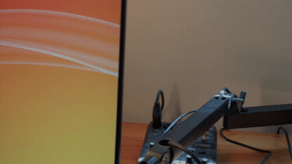
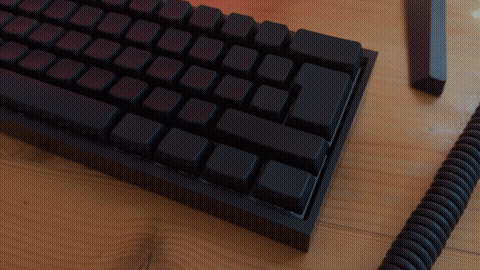
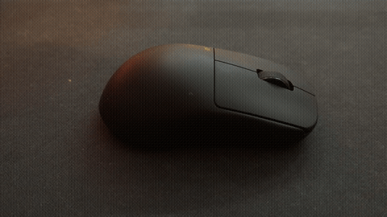
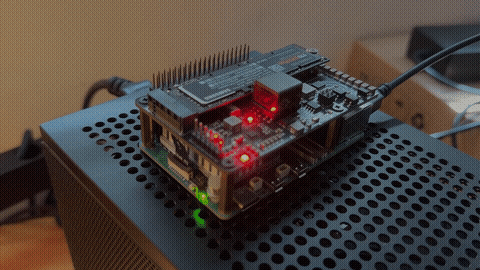
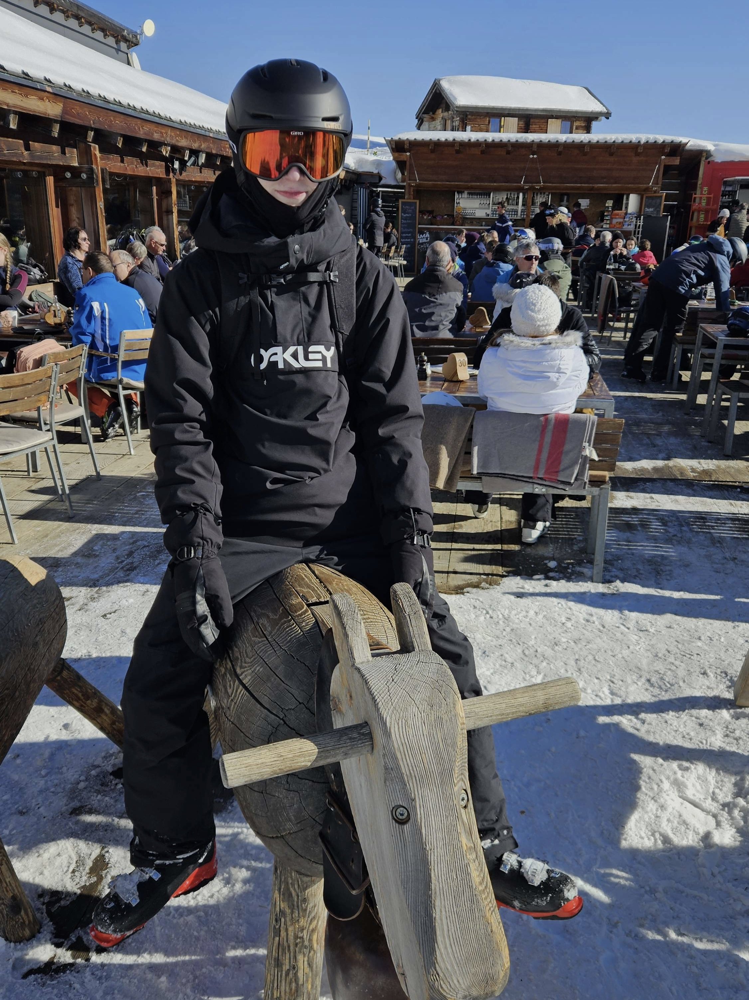
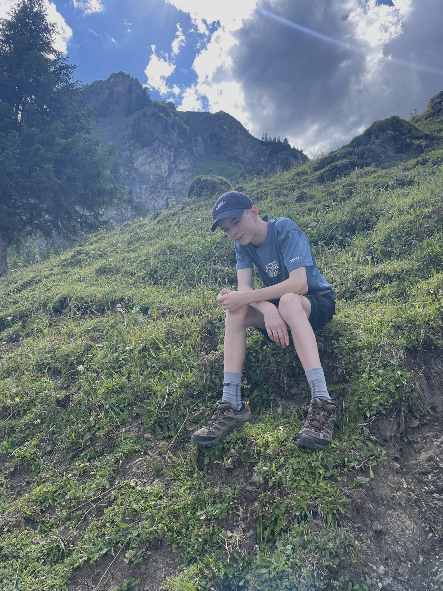

My name is Matti Näf. I'm 17, a computer science student in Bern, Switzerland, and in my third year at the IMS — the Informatikmittelschule.
Most of what I have built so far is something I wanted for myself first: whatever I was curious about at the time, or whatever made my own day a little easier. That is where everything under projects came from — a reverse proxy so my own LLM server can be reached from outside without being left open (Ignite), a chat frontend that never leaves my machine (Kobui), a dashboard for the Minecraft server on my Raspberry Pi (Stalkr), and a ComfyUI workflow I kept tuning until it was worth reusing.
The subjects I like most are computer science, English, German, sports and chemistry. Outside school I'm either with my friends — meeting up, or sitting in a voice chat for an evening — or working on my own things and putting them online.
What I would really like to do professionally is machine learning, security tooling and design. Right now I'm looking for a Praktikum in that direction.
My setup
4 clips · 48 MB

The desk
The monitor is on an arm, so the only things standing on the desk are the ones I touch: keyboard, headphones, the microphone on its own boom, the interface behind it and the drawing tablet. The tower is on the floor underneath. What is lit is the wall, not the desk.

The keyboard
All black — black case, black keycaps, nothing printed on them that catches the light. It sits square in front of the monitor with the cable running back over the edge of the desk.

The mouse
Wireless, symmetric and matte black, on the cloth pad that takes up the right half of the desk. There is no cable in any frame of the clip because there is no cable.

The Pi
The homelab end of all this: a Raspberry Pi 5 with an NVMe HAT on the GPIO header and a Samsung 970 EVO Plus in the slot, so it runs off an SSD rather than an SD card. The Minecraft server behind Stalkr runs on a Pi 5 like this one.
Building things
When I was young I spent most of my time on Lego. Making a whole thing out of a pile of identical blocks stimulated some part of my brain, and it never really switched off — to this day I like building things out of parts that were never meant for each other, which is more or less the description of a homelab.
Flow
When something has my interest, I can give it the entire day. Once I'm captured by it there is only the one thing left in the room, and music is what gets me there fastest: as soon as my own songs are playing it's like a closed-off space with a single task inside it. Together with being able to work for hours straight, that combination feels a bit like cheating.
Sports
I've always done sport and I still do. It makes me feel free and light — running as fast as I can is a feeling I don't think I'll ever lose. The competitive side of me grew up in that environment before it turned up anywhere else.
Skiing and hiking
Both are occasional rather than weekly — I get to them when the season and the weekend agree — but they are the two I like doing most.

Skiing
The winter half. This is a stop outside a mountain restaurant with the helmet and goggles still on and the boots still buckled, which is roughly how every lunch up there looks.

Hiking
The summer half. A few hours uphill, and then sitting down on the slope once the ridge is in view — the walking is the point, the view is what you get for it.
Games
Playing games is a way of expressing myself online. A lot of my time in them goes into creating characters and profiles rather than into the game itself. The genres are all over the place — some competitive, some technical, and some just stupidly bad — and so far I've had as much fun with friends as alone.
Where there is a target to shoot at, aim decides it, and mine is probably why I like competitive games as much as I do. Winning against other people on raw technique makes me feel unstoppable. It's pure dopamine.
Anime
I watch anime because it doesn't have to resemble real life. It reads more like an alternate universe, and in some of them I can picture myself living.
Languages
Learning languages has been a passive thing for me so far. Lately it has been Mandarin — far enough to express myself, and maybe one day to talk to native speakers. Without books or a structured plan I haven't got as far with it as I would have liked, but Chinese is the one that really interests me.
- German
- Native
- English
- Spoken
- Mandarin
- Learning